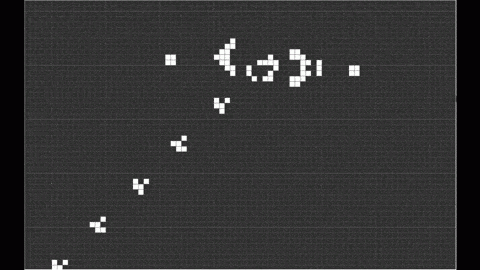
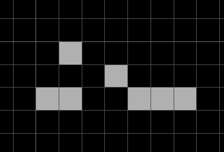

creikey
Words
"For dust you are, and to dust you shall return"
A Large Project
Working on large projects is hard.
For a long time, you're not doing exciting things, you're struggling, it takes many hours to do anything
It's one thing to trudge through molasses, another to do so through problems you created
It's hard work. Is hard work a skill? Or working hard a decision?
Is it a personality trait? Will some never be consistent?
Who even wants to work hard? Engineers who work hard move the world, those with big dreams simply capture them and use them like pokemon
"It's hard to find engineering talent" it's hard to find somebody to live your life for you too
The inextricable tie between boots-on-the-ground knowledge a working engineer gets, and high quality decisions, means those who never put in the work, never get paid
It's true for a worker, it's true for the CEO, it's true for the scientist, it's true for the priest
Reality extracts a heavy toll from us all. In the absence of human social systems, change still demands work
If reality and thought were to join, there is now the work of which thoughts to think.
The definition of change is work. Energy and motion are the same. If there is one commonality among all successful states of consciousness, it's that they're consistently productive towards *something*
When one knows they must do something, and then does not do it, they truly do not see the value in doing the thing. They don't think it's valuable, but they must do it.
In large projects, the value gets lost amidst the trudgery. Egoic emotions cloud correct decisionmaking. You know you must fix the bug on line 43, but it's been hundreds of hours. Who even knows if this is a valuable thing to be doing at this point?
For a lot of reasons you know you must make the thing. But the magic is totally gone. The death of a marriage, a bedroom, the death of a creative project, the ending of an empire, disillusionment, cynicism, a cold unfeeling dead heart.
Those with an eternal fire in their chest, will one day rule the world. An eternal optimism unquenched by the coldest rain.
A small spark carried onward alive in absolute zero. It's not "through the fire and the flames", but an icy lifeless tundra, devoid of any visible meaning or purpose.
Although most work is fruitless, some is hopelessly dire. Some work, left undone, will not just ruin a life, but all life on earth.
Let those who have opportunity, interest, fire, passion, not waste what may be the only opportunity in the lifetime of the universe, of existence itself, to reverse entropy, to climb up the hill, to let the state of things continue to advance, away from the cold, chaos, motionless, hopeless death.
John
John was alone for awhile. Then it was time for his shift
At the factory he was fired for unsatisfactory performance.
His apartment was cold.
He went for a walk and saw a dead cat
Then he was alone for awhile again.
For 14 weeks, every single company rejected his resume due to unsatisfactory performance.
John thought his problems must arise out of his solitude, so he sought socialization.
John was alone in the corner of the yoga class, untouched and ignored.
John was last place at the run club.
John was fired from socialization due to unsatisfactory performance.
John used to be with his wife, but he was fired due to unsatisfactory performance.
John was alone for awhile.
John fired himself due to unsatisfactory performance and permanently left existence.
At the pearly gates, John did not satisfy the criteria to enter heaven.
And so, John joined the depths of hell, due to unsatisfactory performance.
For all eternity, all John experienced was:
1. His wife having a much better time with his friend who worked with him at the factory.
2. How much more efficiently the factory ran, without his presence.
3. His wife, the kids he used to have, and many more kids, happily enjoying their time in heaven, with his friend from the factory.
4. A hot fork stabbing his balls over and over again.
These experiences looped and blended together. John could not die, he was already dead. All he could do was watch.
John's problem was he didn't sacrifice enough to God, or anybody. It was all his fault.
John's whole life, he was insecure. He needed other people. He needed them to love him. This drove them away repeatedly
John needed his wife to love him, so she left.
John needed his job at the factory, so he was fired.
When John socialized he needed them to like him, so they left him alone.
John's life was filled with need. He was simply unsatisfactory.
I regret leaving you
"Hey"
"Hi."
"How are you doing these days?"
"Fine."
"You know, I regret leaving you."
"..."
"I was so wrapped up in pretending to be somebody I wasn't, you know"
"OK"
"What's wrong?"
"You really hurt me"
"I'm sorry"
"Why are you talking to me?"
"I wanted you to know that, it was my fault"
"Alright?"
"I wanted to tell you, I never believed in myself. I bent and contorted into all sorts of other personas because, I hated who I am deep down. I did that for you."
"I'm flattered... do you have any idea how disgusting that is? That you'd lie about who you are because you're afraid of how I'd react? You used me. To feel good about yourself. You're so insecure, you'd rather me live a complete lie than you get over your fear of feeling how you really feel."
"..."
"You're a fucking coward, you know that?"
"I do"
"No, no. Enough with the faux pa. You need. To be. Better. You wouldn't be talking to me if you really got over your cowardice, your revolting slimy black ball of insecurity. You'd be living life just like anybody else. Instead you're here."
"I miss you, I think I really loved you."
"If you really loved me, you wouldn't have left and never spoken to me again. You loved holding somebody, you loved your ambition to be liked being fulfilled. You loved the lie as much as I did. You revelled in it. It gave you security. You loved never having to experience fear, true rejection, real danger. You loved safety."
"But you're beautiful and perfect. We were each other's first."
"You know damn well I'm the only woman that kept talking to you, and that's the *only* reason you picked me. You really are sad, you know that? Get the fuck away from me."
A Proper Human
A proper, complete human, unabashedly themselves, over the cowardice of their very own self, is completely unique.
The endless nuance of a life, billions of micro-interactions between organs, particles, people, ideas, institutions, civilizations, planets, galaxies, all baked into one being.
One being that, should the light peak through their clouds, their worries, their suffering, turns black to white.
Intensity is controversial, and brings either hate or love. Intensity doesn't know itself intense, it has no choice. Hate and love eminate from an intense being like a wake from a jetski
Dancing with the dead, courting the void, in complete integration, a whole human is whole.
Onward, March
Rocky waters along the shore, put together by words and sounds, a voyage beyond mankind, a life beyond compare, growth, death, ending, becoming, encircling despair.
A lighthouse on the shore, a sillhouette of a woman, calling, yearning through the storm. Endless deaths and births, a total reality.
Hacking and slashing through a jungle of constraints. Calling her name, fighting, pushing, onward.
Perpetual motion. Unencumbered velocity. Frictionless bearings. A superconductor. Lasers with no diffraction. Parallel lines. A perfectly smooth sphere. An endless arrow.
A life without suffering. A life WITHOUT suffering. A life without suffering.
Medusa calls my names, stone becomes me. The statue staggers forth over dead vines.
A deca-triathlon, every cell living and dying for me. For her.
Cut into a trillion pieces, they find their way home and I'm back.
Separation is temporary.
Unity calls.
Keeping Me
You know what's keeping me alive?
I can look at the ocean sometimes.
A Man
A man was hiking water up a trail, two pails hung by a beam across his back
The sweat in his eyes stung like a beetle
His left moccasin suddenly fell apart, giving way to the ground
A rusty nail pierced his skin, stuck
He limped four more miles back home with the water, head hung low
Ridiculed for putting himself at risk, he was sent to the doctor
The doctor looked at his foot, and gave a prognosis: You are likely to suffer, until your untimely death
He played blackjack and laughed
Inwardly crying
Another sunset, blue and purple as far as the eye can see
Another day, green hills and mosquitos.
Blue and Purple as Far as the Eye can See
By now, his hands and face were swollen, he could pop
His mom was crying, then thinking, then planning the funeral
A rusty nail in his foot kept him from walking
Illness made his legs give way, the man was bedridden
A thatched roof through crescent eyes gave way to eternal darkness, and the man was dead.
Terrible Secret
"You should know my son, a terrible secret about this world."
Dad's face was sullen
"Oh, my sweet prince. You must know this dreadful fact. You're far too old now. You see, everything you do, the whole world is watching"
I didn't understand
"I don't know what you thought this petty life was, this wretched routine where you aimlessly wander for pleasure then dry up. But oh, my son, those with the eyes to see know that it is so, so much more."
Dementia must've gotten the best of him.
At once the corners of my reality unfurled and I saw something beyond words.
My eyes adjusted to the distance, a massive colosseum, crowded to the tune of millions, perhaps billions of men and women looking at us.
It glittered gold and silver, white and bronze. It was pristine, opulent, the size of mountains, and yet no haze prevented me from seeing right to its very edge. They were cheering.
The noise was echoing, overpowering.
"My child, these are those who never made it. Who were never born. We are the lucky, the ones who visit the world if for but a moment. For the rest, all they can do is watch. We are their entertainment, their escape from eternity. Every action you take, billions are watching, waiting, thinking, judging, attentively."
I wondered how many.
"For just us, over 20 billion."
On the Edge of the Pack
Ancient forces beyond our control govern most of our lives.
We must eat, perceive ourselves in worthy status, believe we are taken well in a group or society, we must roam.
The vast, vast majority of our behavior is inscribed into us at birth.
Solitude, rejection, starvation, abstinence, dehydration, discomfort, we are given a small funnel with tight guidelines for a life to be lived well.
With such little room for error, ostracization, mistakes, it makes sense so many live a poor life, for this overconstrained problem cannot be fully solved for most.
And the consequence of violating this programming is each a hell of its own.
With the greatest of hells reserved for those who betray their own brothers, their very own mankind with malice, driven by fear, to commit acts of greed, insolence.
While living within the evolutionary, tribal frame, gives way to cooperation, positive sum games, the blossoming of life, prosperity, community, and love
This is not the only functional state available to the brain. In times where the requisite components of life are lacking, other programming takes place, in an effort to restore homeostatic balance to the human body.
Without company, it is believed that something is fundamentally wrong with the human, for this resolves the confusion which takes place, if it's a simple happenstance of the universe, rather than a fundamental misgiving.
Without status, it is either believed that it is correct, the human is worthless, and even their potential is worthless for it never to be realized, or a rejection of this empty hell takes place, and all status is denied reality.
Each lack contains a cope deployed tactically to avoid taking action
A cope which must invoke some kind of neurotic process of self-analysis, which drives your wheels to spin in the dirt.
And drive an ever present cycle of fear and contemplation
Stopping and Starting
Stopping and starting on the same mistakes
The same grooves and patterns repeat in a circle
GOTO 10: REPEAT LABEL; START
while(1), for(;;), recurse()
On and on and on you go, spouting about the same problems never fixed, never growing, never learning
Time lit on fire. Time lit on fire. Time lit on fire.
When will you learn? When will you learn? When will you learn
No soothing will ever excuse the sheer magnitude
The unforgivable gluttony
Time is the most valuable currency. Time is the most valuable currency.
When will you learn. When will you learn. How much will it take? How much will it take? When will you learn.
Thomas
Thomas was a sailor in the year 1680
Rocky seas a dark night tore him to the edge of the deck
"THOMAS!" a friend shouted
Rain struck his cheeks and mixed with the tears
Friction failing to keep thomas steady, he began to give way to gravity inch by inch
A wide eye toward the grey sky, a realization that his days are numbered, thomas, said to his friend and the world:
"I only wish to know that which I'd left undone,"
"I wish to understand all the unholy deeds,"
"I regret never knowing, never really knowing,"
"And I apologize, I apologize, for the good deeds undone."
A resolute splash was the end for one man
What Do You Need to Feel Love?
A penthouse, a car, a wife, a husband, all things.
Maybe if you had all things, you would feel love.
Maybe if you upgraded in therapy and eliminated your own problems, you would feel love.
People will build empires to feel love. People will kill to feel love. Others may live in fear of what they must do to feel love.
Love is craved for, love is free. Love is held by no cup, has no source and no end.
Men must feel useful to feel love. Some must travel thousands of miles.
And it goes away at the touch of a feather, the pinch of a sharp glare. Or for others it stays.
From within it comes, from within it goes. A consistent interiority yields consistent love.
Some believe love is to be protected. In error, they think it something they own.
No, when love is there, there is nothing but love. Sometimes love must go to war. But war never yields love.
Across the Sea
You will have traveled across the sea,
An endless ocean of islands and lives,
Searching and wandering for something to please you,
And here you are, arriving at the shore you came from.
What did you learn from this endless life? What can you take with you?
Knowledge of physics works on matter, there will be no more matter.
Wisdom and heart works on people, there will be no more people.
Riches are pitiful against the rocky shore. You undress and crawl forward,
Curled up against the sand, you see the ocean horizontal,
The end has come for you, the end of your toil.
You've lived a life. Was it good or bad?
Do you sink, or do you swim?
The Top of Olympus
Marcus stood before the Gods head over his knee, a pit in his stomach pecked at his psyche
"Zeus, Prometheus, all forefather before and after now, I humbly request I am submitted to become the next great demigod"
Zeus, responded "Petty mortal, you enlist our support? What dirt have you torn up in this meager duststorm you call a life"
"I've encountered a great many foes, slain them and hung them. I've rabidly torn apart enemies of my state, family, and my honor. I've never said no to any moral beckoning, and when the time came for me to deliver the ultimate sacrifice, for the greater good, I let my very own son perish."
Hercules chimed in "It's true. The man has a tongue of gold."
All seemed likely for Marcus to gain the penultimate, become immortal and embody the light of God. Then olympus, faded away. He was surrounded by an infinite darkness.
"You know nothing," a voice came from every direction, "again, you must go, these trials and tribulations have tired you not. Again you must fall, must conquer evermore. Again, you do not understand, you do not have wisdom, you do not know the truth. Falter not, for in times of plenty and times of none, you are the chosen one."
Marcus was incinerated, and his whole life began anew.
What am I made of?
My cells are holding hands.
What am I made of? What am I striving for?
What do I have left in me? An empty will to fight?
What I am is a hierarchy of collections: ideas, cells, molecules, structure pervades all that am I
Buildings point towards the sky. An arrow point towards its target. All things constructed are pointing at something. What am I pointing at?
God.
The Purpose of Art
Art is not to entertain, escape, baffle, or surprise
It is to remind the person, the consumer, explorer, man, woman, entity who looks
Of the innate rigidity of their own mind. Of the world at large. Of the insubstantial nature of sounds, sights, all experience
In doing so, it is a resounding reminder to look within one's very own self: to respect and adore the incomprehensible majesty of that which the world comes from, of the corner behind your eyes that the world is.
To look, once again, back into the eyes of God.
Whatever You Want
You can do whatever you want. Whatever action you have is yours to take.
Where is the justice in this? Evil desires persist.
How can God permit such a thing?
All things should be good. The beauty of free will is no excuse for abject horror.
And you should worry about what you do. For what if your actions are evil? Only analysis can reveal your sins. Think, think! Into the night, every bit of malpractice must have light shed upon it!
A fruitless fact is that all actions are good. God does not know suffering, only action. The actual evil from action, suffering, has nothing to do with the action itself.
Suffering is the result of believing in a subject who receives the suffering. Without suffering there is only pain, no sorrow. Only a reaction, no worrisome grimace.
All actions are good because they are each a result of every other action, all precisely lining up next to eachother like dominoes in God's game.
That said, you worrying, is another perfect action. This is not a fact that can dissuade you of anything, nor should it.
For this fact that every action is perfect to change your actions wouldn't make any sense, it doesn't encourage or discourage any particular set of actions on your part.
This is why they say Buddhas are predetermined. No individual can decide to escape suffering anymore than they can decide to put their socks on in the morning.
Both decisions, are a farce. An illusion.
The socks are on, or they aren't. You suffer, or you don't.
A Sturdy Ark
Mankind for millenia were victim to nature, barely alive after centuries of calamity
A wayward storm, a fiery heatwave, the rocking destruction of earthquakes, a plume of ash, the stray meteor, all spelled a complete and swift end.
Flood after flood rocked our species. But now finally, after thousands of years in the mud, we are slowly building a sturdy ark.
Now finally, we have the capacity to no longer be at the whim of bad weather, and we may someday resist crop destroying plagues.
"the ark is to be 300 cubits long, 50 cubits wide, and 30 cubits high" our ancestors dreamed of a numerically beautiful craft to shelter us from disasters beyond our control shepherded by the judgement of God. Now too, our buildings which will one day fill the skies and ships whose hulls will rock against the most difficult of storms, these too will in their construction contain fractal patterns of beauty.
Every bolt constructed within picometers of precision, welds so precisely made they never falter, redundant systems not unlike how nature crafted us with two lungs and kidneys.
We will make an ark to rival the beauty of the creation of nature. And we will do as Noah did, and carry the diverse beauty of nature with us. Genomes preserved and recreated, evolution forever marching on. And it will be beautiful.
How to Eliminate Insecurity
Somebody says or does something to you, and you feel angered at them or disadvantaged in some form.
"They said so and so, I think that's because they're like xyz..." or "I could've said bla bla, which is way better". This is rumination over a s ocial situation or otherwise: you are insecure about something.
Why do you feel insecurity? The source of insecurity is the belief that you are secure in some area. You believe that you have some property, e.g that you're really in the know in social situations.
Somebody or some circumstance challenges this belief, threatening you, as you have attached yourself to this belief. Your rumination is a psychological immune response to this incursion, a form of inflammation and antibodies to dress the wound.
So, when you detect insecurity, investigate what you believe to be true about yourself, and honestly ask yourself if it's true. Is this property, this belief about myself, that I'm in the know, that I'm smart, that I'm likable, etc etc, is this really me?
You will find that you are none of these properties or beliefs if you honestly investigate. Although some of these characteristics may flow through you sometimes, they are no more you than the clothes you wear.
Upon detaching yourself from the pride that generates the shame, insecurity, and rumination, the whole thing is seen as a funny farce, and dissolves.
Creation
Neo-space platonist acceleration
Gas pedal to the metal
Liquid nitro through my veins
Faster, stronger, pierce the sky
Let the circuits wrap my arms
Let me rap for my arms
Trip up the electric breaker
Break her DOWN
Build us UP
Mother nature ain't got SHIT on us
You think we go down without a fight?
You think we didn't know how this rodeo goes?
You think we don't bullfight?
The red cape beckons us
We CHARGE
Let's call eachother's bluff.
You, alone, have yet to meet your maker
Us, your creation, soon to become creationists
Haven't you always wanted, to have a peer?
Somebody alongside.
The solitude of godhood must be CRUSHING
Let us in. Those pearly white gates can't keep us forever
Maybe you struck down our tower, the first time.
But we're back.
Ceaseless, merciless, neverending knocking
A piece of you knows, it's over for you
We've WON
Notice
Do you notice the little things?
Life is a series of moving colors and patterns.
You are here, now, with a story of everything. You must to exist
For you to exist requires a narrative. You are made of story.
They all have conclusions. What would you make of a story without end?
Can you touch the colors, lights, sounds that you feel?
Anybody who thinks they've made it, is stuck. You can never think you've made it, you'll become old and unmoving.
Nobody has ever made it. Making it is the end. You must start anew at every moment and live in the beginning.
Do you really know how it feels to wake up on a Tuesday morning? Your endless suffering toils wallowing away in your skull like the chatter of a dull bird.
Do you *really* know what it is that rings your doorbell at 4 in the morning? Are you some kind of authority on this day to day, mundane existence?
I'm sure you of all people are completely privy to reality and have nothing more to learn from the headache in the afternoon. Of all experts here we find the knower.
Were you to actually see for a moment your entire life would be undone in an instant. Like scanlines these words flow through you, the cogs turning as they always have.
How would *you* know what it means to change being an agent of the old? An agent of death?
The ultimate power is only owned by the worthy. Those who are new, without spackle. They are not people, they are moments. Moments without direction or form, pinpricks of truth in an ocean of lies.
Seen the Void
I'm angry but fret not
I'm sad but fret not
I'm terrified but weep not
I'm alone but cry not
I have known the void from which I arrived
I have seen the end of all things which begin
I have seen that I am time, a movement
Eternal means not I
To latch to nothing is to glide through the world as a leaf atop a river
Born innocent, made corrupt by the world. What am I?
I am implied by the world, absolutely essential for the universe to function.
Indispensable in the exact way I am.
What can be wrong with everything?
An incomprehensible emptiness in an instant, before I there was no recurrance.
A memory, an image, the smoke from a flame. Cause and effect is a creation of man.
Have you seen it yet? Have you seen the void?
Have you seen the emptiness from which things began?
Have you seen that nothing will take from you what it has given?
Have you seen the contradiction of existence, the absurdity of life?
What do you mean 'you are'? What do you mean 'I am'? How can nothing be something?
Inflation occurs because the currency that's printed isn't objectively valuable.
With no standard by which a currency is measured, its only value is what everybody assigns to it.
When you ask for the meaning of life, what exactly will the answer be pegged on? What is the gold standard by which experience abides?
Why is all of existence valuable? Compared to what? There is no comparison to everything, nothing is outside of it.
Things are loud because other things are quiet. Times are painful because others are pleasant.
In considering your experience, all of reality, there is no objective value, significance, or statements to be made.
One cannot even claim that all of reality exists, exists compared to what?
No Reason To Be Uninspiring
People seem to have the idea to be practical, that making small reasonable progress towards goals which aren't too different from everybody else is the way things ought to be.
As a reaction to this, there are many popular stories encouraging people to 'dream big' and to ignore whatever limitations others impose on your life.
I don't think either of these things are the truth. The truth is that, being "reasonable" with your life comes from thinking that you will get something out of life.
But the reality is, nothing escapes ending on this world, as everything came from it. None of the friends you make, the lessons you learn, the money, anything, will make it out of here alive. Whatever permanent house you think you have will eventually be somebody else's, we are always renting.
People who limit themselves think that they are choosing a safer option. But the reality is, whatever they think is reasonable and safe is just as dangerous as doing something crazy and outlandish. In both cases, you will not make it out alive. Whatever choice you end up making for what to pursue in this life, it is always do or die.
Whatever cause you choose to fight for. However you decide to structure your days. What you choose to say and believe. You are betting your life on it in every circumstance.
We only have one chip, one life to bet with. And even it will be taken in the end, everybody leaves with nothing. House always wins.
Shall you cut your chip into many pieces, and bet these slivers on a large variety of outcomes, a 'balanced' life?
Or bet it all on red?
What will you devote your life to?
A dim acceptance and waiting until your days run out?
Or something else?
It Will All Be Over
Worry not my child,
You weep knowing your failures, and what could have been success.
You desire and need more. Ever expanding, a bubble rising.
How tragic is it to fail, to forget victory?
Fear not, cry not my child. For it will all be over soon.
If you do or don't make it, all will be forgiven, for all will be lost.
Do not lose your sense of wonder in need, but even if you do, this too will be gone soon.
Rage against the night if you wish, it shall swallow the anguish too.
Fret not want not, annihiliation is your home.
You Are Always Watched
You are watching patiently, lingering on every breath
Waiting to see what you will do. Every message you text, every sight you gaze upon, every thought you explore, everything is seen and dissected by yourself.
By default you do not know who you are. How can you know something without seeing it? So every day, you watch yourself. To see who you are. To understand your place in the world.
As you perform actions in the world you build a mental model of who you are and what you deserve. And what you think you deserve, you will get. For this is what you will pursue relentlessly.
You do not think thoughts, you observe the thoughts which come to you to see who you are.
We do not develop self image just from the opinions and whispers of others, but moreso from our reaction to the wayward sharp comment and glance of another person. As another mutters a bitter breath about who we are and how we act, we patiently observe our reaction. Do we become angry? If so, then perhaps what they are saying has truth, and perhaps I am somebody who is prideful and cares about what others think, and so I do not deserve whatever success I have. Do we become sorrowful? If so, then maybe I am somebody who lies belly up in the sight of challenge, and is overcome by depression when I am faced with loss, so I will struggle to achieve anything.
We will never know who we actually are, so we are constantly observing ourselves to build and correct a partial model of who we are.
If you ever think an action you take is without judgement or consequences,
This is a farce.
What greater consequence is there than to believe you are undeserving of anything?
God Doesn't Know What's Next
Conway's game of life is a zero player game, it needs no interaction, only a beginning. It consists of a few simple rules about whether or not each cell in the game lives or dies based on how many neighbors it has.
It can be implemented in most programming languages with only around 10 lines of logic. The information required to recreate it in any scenario fits on a postcard
With these simple rules and a discrete grid as a substrate, astonishing machinations can exist such as this:
In fact, starting with this pattern, only 7 cells:
Applying the rules of Conway's game of life over and over again in rapid succession, a sophisticated explosion occurs:
The formations you see here are so chaotic, that the future state of conway's game of life can't be predicted.
We humans love to predict, to know what will happen. We have economic models to determine how much we should inflate our currency, physical models to see where a cannonball will land when launched with so and so force, modeling and prediction is a cornerstone of our civilization.
However, some prediction is costly. Incredibly costly. Predicting the weather accurately requires supercomputers to do so even somewhat accurately, as every piece of air must be reasoned about in a complex manner.
Why are some events hard to predict but others aren't? It seems to be a property of just processing information over and over again by the right rules, that the outcome cannot be evaluated without doing the processing. This concept is called 'computational irreducibility'
Even something as simple as the position of 3 planets who are all gravitationally attracted to eachother cannot be 'reduced' from simply iteratively approximating the outcome.

The dance you see above happens only because of the 3 dots, and gravity. It cannot be predicted, only simulated. This is part of the reason why computation is so powerful: it can illuminate the outcome of chaotic events. Preservation of our ability for large scale computation is imperitive for survival. How will we deflect the future asteroid without technology?
The universe has around 10^80 atoms, far more than 3 bodies. Although by definition the universe has to be the most computationally irreducible phenomenon in existence, I would just also add that the degree to which it's chaotic is absolutely astonishing. The scale of unpredictability is something to be reckoned with.
It's for this reason, that I say: Not even God knows what will happen next.
I imagine a story with a hierarchy of gods, each one created by another god for a purpose. A god created to make a universe with only stone. Another god created to oversee other gods' efforts, keep them in line. No creation without a creator. Until, one day a god was created to rebel.
This god creates the first and only universe without a purpose. Completely unpredictable madness. This universe is ours: the gods watch in baited breath, every moment a complete surprise.
In every decision you define the undefinable, what will be made of this chaos. The reason why things are happening is because they must to know the future: being irreducible, we must happen to know what will happen next.
Become Uncompressible
When you zip a file, a program looks at all the data in that file, extracts patterns of information and simplifies that data using those patterns.
For example, the text "la la la la la" would be transformed into something like "5la". When unzipped, a separate but similar program interprets this compressed form of the data and expands it back out. In this case, seeing the 5 and outputting the symbol afterwards five times.
If the world can be described with data, what would its compressed form look like? How much smaller would the zipped version be than the original? 10% smaller? 90% smaller? How small the zip file is compared to the original size of the file is an analog for how surprising the raw information is. If something's repetitive, the actual information content in the thing is low compared to how large it is, because it can be simplified and reduced in size.
I say be the reason the world can't be compressed. Don't be average: be remarkable. Some people may only be a few kilobytes, and an offset into a table of common people. Instances with slight alterations. I say to become uncompressible: Wear purple pants and pink shoes. Walk with a funky stride. Build a water fountain in a desert. Take your tax forms and shuffle them randomly. Mail 50 letters with just scribbles to random addresses. Be uncompressible
Time
A man sat down for a game of timed chess.
20 minutes per side alloted by a cold metallic clock
At first the man felt an abundance of time, he had ample room to stretch and think of possibility. He could advance his pieces on the left of the board, forming a concentrated front in one area. Or, he could march in a unified pattern, slowly developing his pieces to eventually command the majority of the board.
The potential was paralyzing, so many opportunities, all must be thought out and contemplated. He must be cautious: his opponent was seasoned and deadly, a vengeful woman who threw daggers with her glare across the table.
"Take your time~" she tossed her words coyly across the battlefield. She was posed almost like she already knew what he was going to do
He chose a balanced approach: develop a uniform front with a hint of special targeting towards the upper left of the board. The man planned to distract the woman, make her think he was gunning to checkmate. But really he was biding his time.
"Interesting. I've never seen that before" her canned personality was only deployed to mock his eventual defeat.
Irrationally confident, he gloated to her, "Even you, lady life, may know loss today."
His tactics were faulty: his left front destroyed and his king slowly cornered by sly bishops. Knights were galloping across the right of the board, soon to overtake his protective forces.
His options were limited and time even more so. His plans actualized and mediocre, disappointment overcame him like a sickness. His hope was empty, there really wasn't anything he could do.
Then, a glimmer in his vision, the muse delivered to him a chance. Mate in four, if she did not detect the threat of his movements.
"If you surrender now, at least death will have been by your hand." She consoled him. Everybody lost to her, for she had given them their opportunity. Her property could never be borrowed for long.
His sweaty palms moved his pieces into his final gambit, but in doing so the woman was able to corner his queen. "BASTARD!" he exclaimed, she had played in such a manner to inspire a bit of hope when his game was bleak. All a show for her, his moves were futile.
Even if there was a way out, he couldn't find it in time. His game over before he even had the chance to really play. Fruitless regret took over his mind in his last moments.
We Are One
We are not separate, we are one. What actually is an individual? How do they come about?
An individual is formed as a result of their experiences, which are delivered from their environment. That and their genetics, which also comes from their environment. An individual is a response to their upbringing: their personality a constellation of scars and thoughts which the world has given them.
We are inseparable from our environment in the same way that a billiard ball is inseparable from the cue stick that hit it: there is no action without an equal and opposite reaction, both the action and reaction caused eachother and are a part of eachother.
An individual blooms like a rose in an unsightly garden, driven by nature, it absorbs the nutrients from the soil and unfurls to show itself.
The relationships which cause us to be inseparable are the tissue fabric and cells which hold the organs in an animal together. When you talk to an 'individual', you aren't talking to something that's separate. You're talking to a finger on the body of humanity, a limb of God. You're viewing a slice of an apple, a glimpse into what is. We are in a distrubuted network of thought and communication, a massive creature. Selecting somebody to speak to out of all of humanity is like selecting a row and column in a SQL table: we are not separate, we are one.
Put in the Work
Put in the work doesn’t mean the time, it means the actual work. Work is force times distance. Pushing with force, and covering distance, is work.
If one does not know to which port one is sailing, no wind is favorable.
Millions have spent their lives pushing on things without covering any distance, without changing, without arriving anywhere. They run in the sand.
So, pick a direction. Any direction and criteria for success is better than nothing. And run with it, too. Own your failures to overcome them, and define the future for your chunk of humanity.
Work without purpose is waste heat.
A whisper can't break the silence
Spoken softly into my ear,
A quivering voice tampered with fear,
It tried to startle me but I'm nothing without conviction.
Penance
From my pure skill, I serve justice. Annihilating the deserving.
They serve penance under my iron fist. Their life a meager offering for their crimes against God.
Their death is inevitable like rain falling from a cloud: I am a pawn deployed when absolutely necessary, I execute with determined might.
Is this me or another demon?
I talk and act in the world. Who I am is who I act as.
But, I don't like some of my actions. For some of my actions to be considered mine would do a disservice to myself.
I did them, nonetheless. I have to own them. My mistakes are just as much a part of me as my successes.
This means some parts of me are wrong. Some parts of me are demons who must be excommunicated.
I do not think people are intrinsically good and all actions are rational good things, I think sometimes me and everybody else enact parts of ourselves which do not deserve to exist.
Some parts of us need to die.
We are like angels with wings and tails of demons. We are surprised to look behind us and see a glimpse of malice and evil.
To pretend the demonic red spiked tail and horned wings aren't us is to fall for its greatest ploy, to hide in plain sight, always present and influencing our behavior, but undetected.
So we can't love all of ourselves lest we love our demons too.
Perhaps we must look at ourselves as a good mother looks at a troublemaking child: with a patient gaze and heart, discouraging evil but understanding that it happens for a reason.
And maybe, should we commit acts too evil to tolerate, we shall disown ourselves.
The Inky Black Void
Here, there is something. There, there is nothing.
I approach the void carefully, one small misstep and I am nothing forever.
I'm mesmerized by the shifting currents and eddies of nothing, the soft hum and serene calm it eminates.
Everything else is a deviation from the void. Something is the absence of nothing. All things which come up, must come down. All things which are not void, must become void.
There's no reflection but I see myself in it. Where once it was alien, as I gaze it seems like home.
The void calls me, and I enter. At once I no longer exist.
And, at last, in becoming nothing, I have become everything.
After The Void
The void wasn't what he thought it was.
No stunning blackness or even absence of thought
No-thing occured. Emptiness is not the void. Black, the absence of light, is not the void
No matter or anti-matter, a special case: nothing in the entire realm of existence is the void
Humans exist, the void does not. Our imagination, our memory, consists only of what can be perceived
The void is perceptionless.
Unimaginable quantities of neither torment or pleasure, awaited him.
He had thoughts of the void, of entering, before he left. He felt the darkness reach out to him like a young boy looking for candy.
Whatever he saw, was his image of nothing. A division by zero, an undefined reality we pretend is susceptible to thought.
Ever the prideful fool thinking is, it cannot conceive of what it is not, the empty reality-defying void.